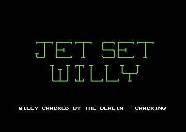
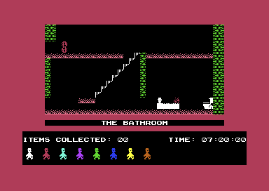

<meta charset="utf-8">
<meta name="viewport" content="width=device-width, initial-scale=1">
<title>{{title}}</title>
<link rel="preconnect" href="https://fonts.googleapis.com">
<link rel="stylesheet" href="https://fonts.googleapis.com/css2?family=Lato:wght@400;700;900&family=IBM+Plex+Mono:wght@400;500&display=swap">
<style>
:root{
  --bg:#23262d; --paper:#e9e7e1; --surface:#ffffff; --surface-2:#f1efea; --line:#d5d3cc; --line-soft:#e0ded8;
  --ink:#2f3136; --ink-soft:#55585f; --ink-mute:#80838a;
  --link:#1f5fa8; --link-hover:#154480; --accent:#1f5fa8;
  --amber:#c25a00; --cyan:#1f5fa8; --coral:#d04a3a; --green:#2a8a4a; --violet:#4a5bd6; --hl:#fff0c2;
  --chip:#2f3136; --chip-ink:#ffffff;
  --c64blue:#40318d; --c64grey:#686868;
  --fd:'Lato',system-ui,sans-serif; --fb:'Lato',system-ui,sans-serif; --fm:'IBM Plex Mono',ui-monospace,Menlo,monospace;
  --col:1080px; --gx:68px; --fs:17px; --lh:1.6; --hw:900; --h1:46px; --h2:26px; --sy:48px; --pp:26px; --r:10px;
  --plate-shadow:0 1px 2px rgba(0,0,0,.05),0 4px 14px rgba(0,0,0,.05);
}
*{box-sizing:border-box}
html{background:var(--bg);min-height:100%}
body{background:var(--paper);color:var(--ink);font-family:var(--fb);font-size:var(--fs);line-height:var(--lh);max-width:var(--col);margin:0 auto;min-height:100vh;padding:0 0 4rem}
h1,h2,h3{font-weight:var(--hw);letter-spacing:-.01em;text-wrap:balance;color:var(--ink);margin:0}
.wrap{padding:0 var(--gx)}
.hero{padding:48px var(--gx) 8px;text-align:left}
.eyebrow{font-family:var(--fm);font-size:12px;letter-spacing:.08em;text-transform:uppercase;color:var(--ink-mute);margin:0 0 10px}
.hero h1{font-size:var(--h1);line-height:1.15;letter-spacing:-.02em;margin:0 0 14px}
.hero .sub{margin:0 0 .6em;color:var(--ink-soft)}
section{padding:var(--sy) 0 24px}
.fig{font-family:var(--fm);font-size:12px;letter-spacing:.08em;text-transform:uppercase;color:var(--ink-mute);margin:0 0 10px}
h2.t{font-size:var(--h2);margin-bottom:12px}
h3{font-size:17px;margin:22px 0 8px}
.lede{color:var(--ink-soft);margin:0 0 30px}
.plate{background:var(--surface);border:1px solid var(--line);border-radius:var(--r);padding:var(--pp);box-shadow:var(--plate-shadow)}
.cap{font-size:14px;color:var(--ink-mute);margin-top:14px;line-height:1.55}
.cap b{color:var(--ink);font-weight:700}
code{font-family:var(--fm);font-size:.82em;background:var(--chip);color:var(--chip-ink);border-radius:4px;padding:2px 6px;white-space:nowrap}
table.jw-t{border-collapse:collapse;width:100%;font-size:14.5px}
table.jw-t th,table.jw-t td{text-align:left;padding:6px 9px;border-bottom:1px solid var(--line-soft);vertical-align:top}
table.jw-t th{font-weight:700;color:var(--ink-soft)}
table.jw-t td.jw-n{font-family:var(--fm);font-size:13px;white-space:nowrap}
.jw-scroll{overflow-x:auto}
.jw-row{display:flex;flex-wrap:wrap;gap:8px;align-items:center;margin:0 0 14px}
button.jw-b{font-family:var(--fm);font-size:13px;padding:6px 11px;border:1px solid var(--line);border-radius:6px;background:var(--surface-2);color:var(--ink);cursor:pointer}
button.jw-b[aria-pressed="true"]{background:var(--chip);color:var(--chip-ink);border-color:var(--chip)}
button.jw-b:hover{border-color:var(--ink-mute)}
.jw-pics{display:grid;grid-template-columns:repeat(auto-fit,minmax(260px,1fr));gap:16px}
.jw-pics img{width:100%;height:auto;display:block;image-rendering:pixelated;border-radius:4px}
.jw-scr{width:100%;height:auto;display:block;image-rendering:pixelated;border-radius:4px;background:#000}
.jw-mid{max-width:768px}
.jw-hex{font-family:var(--fm);font-size:12px;line-height:1.5;display:grid;grid-template-columns:auto repeat(16,1fr);gap:1px 2px;margin:16px 0 8px;max-width:640px}
.jw-hex span{text-align:center;border-radius:3px;padding:0 1px}
.jw-hex span.jw-ad{color:var(--ink-mute);text-align:right;padding-right:6px}
.jw-hex span[data-f]{cursor:pointer}
.jw-hex span.jw-on{outline:2px solid var(--ink);outline-offset:-1px}
.jw-fields{display:flex;flex-wrap:wrap;gap:6px;margin:6px 0 10px}
.jw-fields button{font-family:var(--fm);font-size:12.5px;padding:4px 9px;border-radius:5px;border:1px solid var(--line);cursor:pointer;color:var(--ink)}
.jw-fields button[aria-pressed="true"]{outline:2px solid var(--ink)}
.jw-say{min-height:3.2em;font-size:15px;margin:6px 0 0}
.jw-gal{display:grid;grid-template-columns:repeat(auto-fill,minmax(44px,1fr));gap:3px;background:#101114;padding:6px;border-radius:6px}
.jw-gal canvas{width:100%;height:auto;image-rendering:pixelated;cursor:pointer;border-radius:2px;display:block}
.jw-gal canvas.jw-on{outline:2px solid #f5c542}
.jw-kb{display:flex;flex-direction:column;gap:4px;font-family:var(--fm);font-size:11px;overflow-x:auto;padding-bottom:4px}
.jw-kr{display:flex;gap:4px}
.jw-k{min-width:30px;height:30px;padding:0 4px;display:flex;align-items:center;justify-content:center;border-radius:4px;background:#4c4844;color:#f2efe9;white-space:nowrap;flex:none}
.jw-k.jw-l{background:#1f5fa8}.jw-k.jw-r{background:#2a8a4a}.jw-k.jw-j{background:#c25a00}.jw-k.jw-p{background:#7a52a8}.jw-k.jw-o{background:#d04a3a}
.jw-key{display:flex;flex-wrap:wrap;gap:6px 16px;font-size:14px;margin-top:12px}
.jw-key i{display:inline-block;width:12px;height:12px;border-radius:3px;margin-right:6px;vertical-align:-1px}
.jw-chart{width:100%;height:auto;display:block}
.jw-out{font-family:var(--fm);font-size:13.5px}
input.jw-range{width:100%;max-width:480px}
@media (max-width:760px){:root{--gx:20px;--h1:34px;--pp:16px}.jw-hex{font-size:10px}}
</style>
<!-- tabs -->
<header class="hero">
  <p class="eyebrow">{{year}} · {{publisher}}</p>
  <h1>{{title}}</h1>
  <p class="sub">A house of sixty rooms drawn from four kinds of cell, two tunes tuned for an American machine, and a housekeeper who leaves after 50 of the 80 items, though the bed she guards does nothing.</p>
</header>
<main class="wrap">

<section id="game">
  <p class="fig">01 · The game</p>
  <h2 class="t">Miner Willy's new house</h2>
  <p>Willy has spent his fortune on a mansion and thrown a party in it. Maria, his housekeeper, will not let him go to bed until the mess is cleared: 80 flashing items left in the house's sixty rooms. He walks and jumps, climbs ramps, rides conveyors and swings on ropes, and anything that moves kills him, as do the hazards drawn into the rooms. He has nine lives, and a clock on the status line runs from seven in the morning.</p>
  <p>This page is about the Commodore 64 version, as the Berlin Cracking Service released it on disk. Its rooms, sprites and tunes are the game's own; the crackers' part is a start-up that goes straight to the title.</p>
  <div class="jw-pics">
    <figure class="plate" style="margin:0"><figcaption class="cap">The title screen, which plays the Moonlight Sonata while its message scrolls.</figcaption></figure>
    <figure class="plate" style="margin:0"><figcaption class="cap">The Bathroom, where every game starts, at seven o'clock.</figcaption></figure>
  </div>
</section>

<section id="music">
  <p class="fig">02 · The tunes</p>
  <h2 class="t">Music: both tunes are tuned for an American C64</h2>
  <p class="lede">The title plays the opening of Beethoven's Moonlight Sonata on three voices, and the house plays Bach's first two-part Invention on two. Press a tune to hear it as a European machine plays it, or switch the clock to an American one.</p>
  <div class="plate">
    <div class="jw-row"><span class="jw-out">Machine</span><button class="jw-b" type="button" data-clock="pal" aria-pressed="true">PAL, 985,248 Hz</button><button class="jw-b" type="button" data-clock="ntsc" aria-pressed="false">NTSC, 1,022,727 Hz</button></div>
    <div id="jw-sid"></div>
    <p class="cap"><b>The page runs a port of the game's two music players</b>, the title's (<code>$A139</code>) and the one in play (<code>$2066</code>), through the site's model of the SID, three ticks every second frame as the game's interrupts call them (<code>$A821</code>, <code>$3435</code>). <code>test_music.js</code> holds the port against the game's own code on the kit's 6502 simulator: 11,652 frames of both tunes, every write to the chip the same. The game plays the in-game tune round and round; the player stops once it starts again. The filter is on, with one 8580's cutoff, because the in-game tune's first voice depends on it: the model lets nothing of that voice through, where VICE's 8580 let it through about 19 dB down.</p>
  </div>
  <p>Both players read the same table of 96 SID frequencies, once at <code>$20EC</code> and again at <code>$A207</code>. A SID's frequency word counts in cycles of the machine's clock, so one word gives a lower note on a PAL machine, whose clock is slower. By the NTSC clock the table's index 58 is A#4 at 466.2 Hz, and the notes fall a semitone apart, close to concert pitch. By the PAL clock the same word gives 449.1 Hz, and every note is 65 cents lower, nearer the semitone below than the note it was written as. The tempo moves too, since the players count frames: 50 a second in Europe, 60 in America.</p>
  <p>The in-game tune starts at <code>$2005</code> by storing 1 in every SID register from <code>$D401</code> to <code>$D418</code> before setting the ones it uses. That leaves the filter's cutoff at almost nothing and voice 1 routed into the filter (<code>$D417</code> = 1), with none of the filter's three outputs switched on. Voice 1 goes in and very little comes out, so the upper voice plays almost silent all game. With the filter switched off above, voice 1 plays as it does in another crack of the game, which has 0 at <code>$2020</code> and clears the registers instead.</p>
</section>

<section id="frame">
  <p class="fig">03 · The screen</p>
  <h2 class="t">One frame, rebuilt from memory</h2>
  <p class="lede">The Bathroom as the game draws it, rebuilt from the video chip's registers and memory, with Willy, a guardian and the toilet as sprites. Switch the sprites off, or colour each cell by the background register it takes.</p>
  <div class="plate">
    <div class="jw-row"><button class="jw-b" type="button" id="jw-fs" aria-pressed="true">Sprites</button><button class="jw-b" type="button" id="jw-fb" aria-pressed="false">Backgrounds</button></div>
    <canvas id="jw-fr" class="jw-scr" width="768" height="544"></canvas>
    <p class="cap"><b>Drawn by the site's renderer from one frame recorded in the emulator</b>, its registers, screen, colour memory and the bytes the drawing reads: all 104,448 pixels match the emulator's picture of the same frame. The screen is in extended colour mode: the top two bits of a cell's code pick one of four background colours, <code>$D021</code> to <code>$D024</code>, and the low six bits its glyph. Willy is sprite 0, the guardian sprite 1 and the toilet sprite 7.</p>
  </div>
  <p>Extended colour mode costs the game three quarters of its character set: only 64 glyphs can be drawn, each in any of four backgrounds. The rooms need seven of them, <code>$20</code> to <code>$26</code>, all on <code>$D021</code>, the room's background. The room's name sits on <code>$D023</code>, and the cells round the room are code <code>$C0</code> on <code>$D024</code>, the border's colour, so the border seems to reach in to the edge of the room (<code>$2E9C</code>).</p>
</section>

<section id="rooms">
  <p class="fig">04 · Rooms</p>
  <h2 class="t">A room is 256 bytes</h2>
  <p class="lede">The Bathroom's record, as it sits at <code>$E300</code>. Press a field, or any byte, to see what the game makes of it.</p>
  <div class="plate">
    <canvas id="jw-rm" class="jw-scr jw-mid" width="768" height="432"></canvas>
    <div class="jw-fields" id="jw-fl"></div>
    <p class="jw-say" id="jw-say"></p>
    <div class="jw-scroll"><div class="jw-hex" id="jw-hex"></div></div>
    <p class="cap"><b>The picture is drawn by a port of the game's room builder</b> (<code>$2E55</code> to <code>$30E1</code>) from these bytes, in <code>reference/jsw-rooms.js</code>; <code>test_rooms.js</code> holds it against the game's own code for all sixty rooms. The <a href="levels.html">Maps / levels</a> tab draws every room with it.</p>
  </div>
  <p>Rooms 0 to 29 sit at <code>$B000</code> and rooms 30 to 59 at <code>$E000</code>, under the KERNAL ROM, so the copy that brings a room to <code>$0840</code> runs with every bank switched to RAM (<code>$2E55</code>). The map is 32 by 16 cells at four to a byte, so a room's whole layout takes 128 bytes, and each cell is one of four kinds: air, floor, wall or hazard. The conveyor, the ramp and the items are drawn over the map afterwards. Six glyphs come with every room, so the same kind of cell looks different from room to room.</p>
</section>

<section id="willy">
  <p class="fig">05 · Willy</p>
  <h2 class="t">A jump is 36 steps, and a fall of five cells kills</h2>
  <p class="lede">Willy is in one of seven states, and each update of the main loop runs that state's handler. Drag the slider along a jump and the fall after it.</p>
  <div class="plate">
    <canvas id="jw-jc" class="jw-chart" width="760" height="300"></canvas>
    <input type="range" class="jw-range" id="jw-js" min="0" max="75" value="0" aria-label="Update">
    <p class="jw-out" id="jw-jo"></p>
    <p class="cap"><b>The jump's heights are the table at <code>$102D</code></b>, one step added to Willy's height on each update, read by the jump state at <code>$1257</code>; the fall is state 2 at <code>$11FB</code>, two pixels an update. Willy's sprites, <code>$06</code> to <code>$0D</code>, are drawn from <code>$4180</code>.</p>
  </div>
  <div class="jw-scroll"><table class="jw-t">
    <tr><th>State</th><th>Handler</th><th>What Willy is doing</th></tr>
    <tr><td class="jw-n">0</td><td class="jw-n"><code>$1091</code></td><td>Standing or walking</td></tr>
    <tr><td class="jw-n">1</td><td class="jw-n"><code>$123D</code></td><td>Jumping: 36 steps, rising 20 pixels and coming down 20</td></tr>
    <tr><td class="jw-n">2</td><td class="jw-n"><code>$11FB</code></td><td>Falling, two pixels an update, counting the updates</td></tr>
    <tr><td class="jw-n">3</td><td class="jw-n"><code>$14C1</code></td><td>Climbing a ramp: up one cell, two pixels an update, then back to state 0</td></tr>
    <tr><td class="jw-n">4</td><td class="jw-n"><code>$151F</code></td><td>Carried by a conveyor</td></tr>
    <tr><td class="jw-n">5</td><td class="jw-n"><code>$1538</code></td><td>Onto a conveyor: works out which way he was going, and stays in this state while he stands or walks against it</td></tr>
    <tr><td class="jw-n">6</td><td class="jw-n"><code>$1ABC</code></td><td>Holding a rope</td></tr>
  </table></div>
  <p>A jump rises 20 pixels over its first 17 steps, stays level for three and comes down over the last 16, back to the height it started from. Up to step 17 the game looks for a ceiling, and a wall there ends the jump in a fall; from step 18 it looks for something to land on. Both checks run only when Willy's height reaches a whole cell. After the 36th step a jump that has found nothing becomes a fall.</p>
  <p>A fall counts its updates in <code>$51</code>, and each time Willy passes a whole cell a count of 17 or more marks the fall as deadly (<code>$11FB</code>). A fall begins on a cell, so the counts at the cells are 4, 8, 12, 16 and 20: a drop of four cells is safe and a drop of five kills him when he lands. A jump never kills by itself: the jump state has no such check, and it can land only where it began or higher. A floor below the take-off is reached by the fall that follows, counted from the take-off's height. The count goes with Willy into the room below, and into the place he restarts from after a death, which is how one jump can cost every life (<a href="discoveries.html#fall">Discoveries</a>).</p>
</section>

<section id="guardians">
  <p class="fig">06 · Guardians</p>
  <h2 class="t">Eight bytes decide everything a guardian does</h2>
  <p class="lede">Every sprite in the game, from <code>$4000</code>. Press one to read what it is and where it appears.</p>
  <div class="plate">
    <div class="jw-gal" id="jw-gal"></div>
    <p class="jw-say" id="jw-gs"></p>
    <p class="cap"><b>Each sprite is drawn from its 64 bytes</b>, pointer n at <code>$4000</code> + 64n; the words beside it are its comment in the <a href="source.html">Source code</a> tab. The rope's 102 sprites are separate, at <code>$8100</code>.</p>
  </div>
  <p>A room names its first guardian in the table at <code>$2443</code> and how many there are (offsets <code>$E0</code> and <code>$E1</code>), up to seven. Each guardian is eight bytes: which way it moves and which way it starts, its column and row, its first sprite, its far bound, a mask for its frames, its speed and its near bound. Guardians that move across step a column at a time between their bounds, and going right add 4 to their frame when their mask byte is 4 or more (<code>$369E</code>); guardians that move up and down climb and drop between theirs (<code>$3614</code>). Nothing else decides where they go: a guardian never looks at Willy. The <a href="levels.html#room">Maps / levels</a> tab runs every room's guardians with a port of both routines.</p>
  <p>Arrows are separate, 16 records of four bytes at <code>$2403</code>: the room, a countdown, a column and a row. One flies across its room on sprite 6 when its countdown runs out, and a burst of noise on voice 3 warns of it ten counts before. The loop at <code>$314D</code> runs only 15 of them, so the arrow in The Beach never flies, and three records name room 99, which does not exist (<a href="discoveries.html#arrows">Discoveries</a>).</p>
</section>

<section id="ropes">
  <p class="fig">07 · Ropes</p>
  <h2 class="t">A rope is 34 drawings of three sprites</h2>
  <p class="lede">Five rooms have a rope. Let it swing, or drag it through its 34 positions.</p>
  <div class="plate">
    <div class="jw-row"><button class="jw-b" type="button" id="jw-rp" aria-pressed="true">Swinging</button><input type="range" class="jw-range" id="jw-rs" min="0" max="33" value="16" aria-label="Position"></div>
    <canvas id="jw-rc" class="jw-scr jw-mid" width="768" height="432"></canvas>
    <p class="jw-out" id="jw-ro"></p>
    <p class="cap"><b>Drawn from the rope's sprites at <code>$8100</code></b> and the places at <code>$178A</code>, as the routine at <code>$16A2</code> copies them in, in We Must Perform a Quirkafleeg. A room starts its rope at position 16, at the far right of its swing (<code>$30B5</code>). The swing is a port of <code>$16A2</code>, held against the game's code by <code>test_rooms.js</code>.</p>
  </div>
  <p>The rope is three sprites stretched to double height, sprites 5, 6 and 7, and the game keeps a drawing of all three for each of 34 positions: 102 sprites, 6,528 bytes. Positions 0 to 16 take it from hanging straight down out to the right, and 17 to 33 do the same to the left, mirrored. Every second player update moves it on one: from 16 down to 0, on through 17 to 33, then back. Willy holds it at one of 16 points down its length, from a table of 32 bytes for each position at <code>$189C</code>; on the second half of the swing the game mirrors the x (<code>$1C86</code>). Holding the way the rope swings slides him down it, the other way up it, and past the top he leaves by the room's upper exit.</p>
  <p>On a rope the touch that kills Willy is turned off for sprites 5 to 7, the rope itself (<code>$3392</code>). The cells are another matter: when his sprite touches any cell's pixels, the check at <code>$1B96</code> compares the cell's screen code with the tile kinds 0 and 3, and since a room's cells are codes <code>$20</code> to <code>$26</code>, neither matches. Every touch makes him let go, and a hazard never kills him while he holds on.</p>
</section>

<section id="controls">
  <p class="fig">08 · Controls</p>
  <h2 class="t">Every other key on the top two rows walks left</h2>
  <p class="lede">The keys the game reads, from its tables at <code>$2C2B</code> to <code>$2C4C</code>. A joystick in port 2 does left, right and jump.</p>
  <div class="plate">
    <div class="jw-kb" id="jw-kb"></div>
    <div class="jw-key"><span><i style="background:#1f5fa8"></i>left</span><span><i style="background:#2a8a4a"></i>right</span><span><i style="background:#c25a00"></i>jump</span><span><i style="background:#7a52a8"></i>pause</span><span><i style="background:#d04a3a"></i>music, volume, end</span></div>
    <p class="cap"><b>Each key's job is from the four tables of key codes</b> the input scan at <code>$3791</code> reads: left, right, jump and pause. Return, + and − are read elsewhere (<code>$39F1</code>, <code>$34EC</code>), and RUN/STOP ends the game (<code>$3132</code>).</p>
  </div>
  <p>The keys alternate along the top two rows: Q, E, T, U and O go left and W, R, Y, I and P go right, and the number row does the same. The whole bottom row jumps, and the home row pauses; any key that is not a pause key ends the pause. Return turns the music off and on. The + and − keys raise and lower the volume, from 12 by steps of one between 0 and 15, but only while the music plays, and the title's message never mentions them.</p>
</section>

<section id="items">
  <p class="fig">09 · Items, Maria and the clock</p>
  <h2 class="t">Maria leaves after 50 items, and the bed does nothing</h2>
  <p class="lede">The Master Bedroom, where Maria guards the bed. Take 50 items to send her away.</p>
  <div class="plate">
    <div class="jw-row"><button class="jw-b" type="button" id="jw-mg" aria-pressed="false">50 items taken</button></div>
    <canvas id="jw-mb" class="jw-scr jw-mid" width="768" height="432"></canvas>
    <p class="cap"><b>Drawn by the port of the room builder</b>, with Maria placed as <code>$3284</code> places her: sprite 7 at x <code>$A8</code>, every other sprite switched off, until the flag at <code>$0400</code> is set.</p>
  </div>
  <p>Taking an item adds one to a decimal count at <code>$0401</code>, which the status line shows, and when the count reaches 50 the pick-up at <code>$164A</code> sets <code>$0400</code>. That flag does one thing: <code>$3284</code> stops drawing Maria, and the Master Bedroom, which has no guardians, is left empty. There are 80 items, and the count goes on past 50, but nothing else reads <code>$0400</code>. Willy can walk to the bed, and nothing happens there.</p>
  <p>So the game ends one of three ways: the last of nine lives, RUN/STOP, or the clock. It starts at 07:00:00 and the game is over when the hours read 12 (<code>$33BB</code>). The play interrupt adds a second every 50 frames (<code>$3446</code>), which is a real second on a European machine: five hours, whatever Willy has collected.</p>
</section>
</main>
<footer style="margin:16px 0 0;padding:22px var(--gx) 0;border-top:1px solid #e0ded8;font-family:'IBM Plex Mono',ui-monospace,Menlo,monospace;font-size:12px;color:#80838a"><a href="https://github.com/gamesexplained/gamesexplained" style="color:#1f5fa8;text-decoration:none">GitHub</a> · <a href="https://discord.gg/3V9GWyRDWV" style="color:#1f5fa8;text-decoration:none">Discord</a><br>© Games Explained contributors. Write-ups, facts and symbol maps are available under <a href="https://creativecommons.org/licenses/by-sa/4.0/" style="color:#1f5fa8;text-decoration:none">CC BY-SA 4.0</a>; code under <a href="https://opensource.org/licenses/MIT" style="color:#1f5fa8;text-decoration:none">MIT</a></footer>
<script src="../../lib/c64.js"></script>
<script src="../../lib/sid.js"></script>
<script src="reference/jsw-rooms.js"></script>
<script type="application/json" id="jw-frame-data">{"schema":1,"standard":"PAL","lines":312,"cycles":63,"about":"","vic":[216,154,64,74,0,48,0,80,0,112,0,144,0,176,24,154,128,91,0,0,0,131,200,0,255,241,241,0,0,0,0,1,242,240,240,240,242,244,240,241,242,241,241,241,241,241,241],"cia2":[198,63],"cpu":[47,54],"writes":[],"colour":"BQUFBQUFAAAAAAAAAAAAAAAAAAAAAAAAAAAAAAAAAAAAAAUFBQUFBQUFBQUFBQAAAAAAAAAAAAAAAAAAAAAAAAAAAAAAAAAAAAAFBQUFBQUFBQUFBQUAAAAAAAAAAAAAAAAAAAAAAAAAAAAAAAAAAAAABQUFBQUFBQUFBQAAAAAAAAAAAAAAAAAAAAAAAAAAAAAAAAAAAAAAAAUFBQUFBQUFBQUAAAAAAAAAAAAAAAAAAAAAAAAAAAAAAAAAAAAAAAAFBQUFBQUFBQUFCgoKCgoKCgoKCgoKCgoAAAEFCgoKCgoKCgoKCgoKBQUFBQUFBQUFBQUAAAAAAAAAAAAAAAAAAAEABQAAAAAAAAAAAAAAAAUFBQUFBQUFBQUFAAAAAAAAAAAAAAAAAAEAAAUAAAAAAAAAAAAAAAAFBQUFBQUFBQUFBQAAAAAAAAAAAAAAAAEAAAAFAAAAAAAAAAAAAAAABQUFBQUFBQUFBQUAAAAAAAAAAAAAAAEAAAAABQAAAAAAAAAAAAAAAAUFBQUFBQUFBQUFAAAAAAAAAAAAAAEAAAAAAAUAAAAAAAAAAAAAAAAFBQUFBQUFBQUFBQAAAAAAAAAAAAEAAAAAAAAFAAAAAAAAAAAAAAAABQUFBQUFBQUFBQUAAAAAAAAAAAEAAAAAAAAABQAAAAAAAAAAAAAAAAUFBQUFBQUFBQUAAAAAAAAKCgoAAAAAAAAAAAAAAAAAAAYAAAAAAAAFBQUFBQUFBQUFAAAAAAAAAAAAAAAAAAAAAAAAAAABAQEBAAAAAAAABQUFBQUFBQUFBQoKCgoKCgoKCgoKCgoKCgoKCgoKCgoKCgoKCgoKCgUFBQUFBQUFBQUFBQUFBQUFBQUFBQUFBQUFBQUFBQUFBQUFBQUFBQUFBQUFBQUFBQUFAQEBAQEBAQEBAQEBAQEBAQEBAQEBAQEBAQEBAQEBAQEFBQUFBQUFBQUFBQUFBQUFBQUFBQUFBQUFBQUFBQUFBQUFBQUFBQUFBQUFBQEBAQEBAQEBAQEBAQEBAQEBAQEBAQEBAQEBAQEBAQEBAQEBAQEBAQEBAQEBAQEBAQEBAQEBAQEBAQEBAQEBAQEBAQEBAQEBAQEBAQEBAQEBAQEBAQEBAQEBAQEBAQEBAQEBAQEBAQEBAQEBAQEBAQEBAQEBAQEBAQEBAQICAQMDAQQEAQUFAQYGAQcHAQgIAQEBAQEBAQEBAQEBAQEBAQEBAQECAgEDAwEEBAEFBQEGBgEHBwEICAEBAQEBAQEBAQEBAQEBAQEBAQEBAQEBAQEBAQEBAQEBAQEBAQEBAQEBAQEBAQEBAQEBAQEBAQEBAQEBAQEBAQEBAQEBAQEBAQsECwIPAAcFDA==","ram":[{"a":16768,"b":"PAAAPAAAfgAANAAAPgAAPAAAGAAAPAAAfgAAfgAA9wAA+wAAPAAAdgAAbgAAdwAAAAAAAAAAAAAAAAAAAAAA"},{"a":17344,"b":"AA8AAD8AAA8AAA8AAA8AAA8AAA8AP+8AAAgAP/gAP/AAP+4AH98AH9sAD/sAD/sAAAAAAAAAAAAAAAAAAAAA"},{"a":23808,"b":"AAAAAAAAAAAAAAAAAAAAAAAAAAAAAAAANDQARkYAxcUA7u4ApaUA5eUAdnYAPDwAAAAAAAAAAAAAAAAAAAAA"},{"a":30720,"b":"AAAAAAAAAAAAOGzG/sbGAAD8xvzGxvwAAHzGwMDGfAAA+MzGxsz4AAD+wPjAwP4A"},{"a":30784,"b":"AMbG/sbGxgAAPBgYGBg8AA=="},{"a":30816,"b":"AMDAwMDA/gAAxu7+1sbGAA=="},{"a":30840,"b":"AHzGxsbGfAA="},{"a":30864,"b":"APzGxvzMxgAAfMB8BsZ8AAB+GBgYGBgA"},{"a":30976,"b":"AAAAAAAAAAAAQAlkki2W/x+qAFX4VQCq"},{"a":31008,"b":"q6qooICAgIBp/////////yIECneHsaoK"},{"a":31104,"b":"AHyGipKifAA="},{"a":31160,"b":"AP4GDAwYGAA="},{"a":31184,"b":"AAAYAAAYAAAAAAEAAAAAAAEDBwYAAQMD8PD40PjwYPD4/P72+NoOjA=="},{"a":31231,"b":"AA=="},{"a":31744,"b":"wMDAwCIiICAgICAgICAgICAgICAgICAgICAgICAgICAgICIiwMDAwMDAwMAiIiAgICAgICAgICAgICAgICAgICAgICAgICAgICAiIsDAwMDAwMDAIiIgICAgICAgICAgICAgICAgICAgICAgICAgICAgIiLAwMDAwMDAwCAgICAgICAgICAgICAgICAgICAgICAgICAgICAgICIiwMDAwMDAwMAgICAgICAgICAgICAgICAgICAgICAgICAgICAgICAiIsDAwMDAwMDAISEhISEhISEhISEhISEgICQiISEhISEhISEhISEhIiLAwMDAwMDAwCIgICAgICAgICAgICAgICQgIiAgICAgICAgICAgICIiwMDAwMDAwMAiICAgICAgICAgICAgICQgICIgICAgICAgICAgICAiIsDAwMDAwMDAIiAgICAgICAgICAgICQgICAiICAgICAgICAgICAgIiLAwMDAwMDAwCIgICAgICAgICAgICQgICAgIiAgICAgICAgICAgICIiwMDAwMDAwMAiICAgICAgICAgICQgICAgICIgICAgICAgICAgICAiIsDAwMDAwMDAIiAgICAgICAgICQgICAgICAiICAgICAgICAgICAgIiLAwMDAwMDAwCIgICAgICAgICQgICAgICAgIiAgICAgICAgICAgICIiwMDAwMDAwMAgICAgICAhISEgICAgICAgICAgICAgICYgICAgICAiIsDAwMDAwMDAICAgICAgICAgICAgICAgICAgICAlJSUlICAgICAgIiLAwMDAwMDAwCEhISEhISEhISEhISEhISEhISEhISEhISEhISEhISIiwMDAwMDAwMDAwMDAwMDAwMDAwMDAwMDAwMDAwMDAwMDAwMDAwMDAwMDAwMDAwMDAoKCgoKCgoKCgoJSIhaCCgZSIko+PjaCgoKCgoKCgoKDAwMDAwMDAwMDAwMDAwMDAwMDAwMDAwMDAwMDAwMDAwMDAwMDAwMDAwMDAwKCgoKCgoKCgoKCgoKCgoKCgoKCgoKCgoKCgoKCgoKCgoKCgoKCgoKBJVEVNU2BDT0xMRUNURUR6YHBwYGBgYGBgYFRJTUV6YHB3enBwenBwoKCgoKCgoKCgoKCgoKCgoKCgoKCgoKCgoKCgoKCgoKCgoKCgoKCgoHt9oHt9oHt9oHt9oHt9oHt9oHt9oHt9oKCgoKCgoKCgoKCgoKCgoKB8fqB8fqB8fqB8fqB8fqB8fqB8fqB8fqCgoKCgoKCgoKCgoKCgoKCgoKCgoKCgoKCgoKCgoKCgoKCgoKCgoKCgoKCgoKCgoKCgoKCgoKCgoA=="},{"a":32760,"b":"BnQ="},{"a":32767,"b":"Dw=="}],"capture":{"phase_cycles_uncertain":0,"frame_cycles":19655,"frame_ended_on_line":0,"picture_lines_low":0,"writes_account_for_end_state":true,"ram_bytes_changed_during_frame":52,"colour_cells_changed_during_frame":0}}</script>
<script>
/* jswMusic */
// The game's two music players, ported: the title's ($A0CD starts it, $A139 plays one tick) and the
// one in play ($2005 starts it, $2066 plays one tick). Each voice reads its notes as pairs of bytes,
// a pitch (0 for a rest, otherwise an index into a table of 96 SID frequency words) and a length in
// ticks, and the interrupt plays three ticks every second frame ($A821, $3435). data: { title: the
// bytes from $6C00, game: from $9C00, titleNotes: $A207-$A2C6, gameNotes: $20EC-$21AB }. Tune 0 is
// the title's, which stops where voice 1 reaches its end marker; tune 1 is the in-game tune, which
// the game plays round and round, and which stops here once it has started again.
function createDriver(data) {
  const sid = new Uint8Array(25);
  const ptr = [0, 0, 0], len = [0, 0, 0], at = [0, 0, 0], pitch = [0, 0, 0];
  let tune = 0, on = false, div = 0, again = false;
  const d = { sid, writes: [], init, stop, play, playing: () => on, voice: (x) => ({ at: at[x], pitch: pitch[x] }) };
  const w = (r, v) => { sid[r] = v; d.writes.push(r, v); };
  const rd = (a) => { const s = tune ? data.game : data.title; return s[a - (tune ? 0x9C00 : 0x6C00)] | 0; };
  const note = (v, p) => {                         // $A166 or $208C: the pitch's frequency, gate on
    const t = tune ? data.gameNotes : data.titleNotes, o = 7 * v;
    w(o, t[2 * p]); w(o + 1, t[2 * p + 1]); w(o + 4, 0x41);
  };
  function startTitle() {                          // $A0CD
    ptr[0] = 0x6C00; ptr[1] = 0x7248; ptr[2] = 0x7350;
    for (let r = 0; r < 25; r++) w(r, 0);          // $AA89
    for (const r of [5, 12, 19]) w(r, 0x08);
    for (const r of [6, 13, 20]) w(r, 0x90);
    w(2, 0x58); w(3, 0x02); w(9, 0x6C); w(10, 0x02); w(16, 0x80); w(17, 0x02);
    for (const r of [4, 11, 18]) w(r, 0x41);
    w(24, 0x0A);
    len[0] = len[1] = len[2] = 1;
  }
  function startGame() {                           // $2005: A = 1 into $D401-$D418 ($2020)
    ptr[0] = 0x9C00; ptr[1] = 0x9DEE;
    for (let r = 1; r < 25; r++) w(r, 1);
    w(5, 0x3A); w(6, 0x98); w(12, 0x28); w(13, 0xAA);
    w(2, 0x20); w(3, 0x03); w(9, 0x58); w(10, 0x02);
    w(4, 0x41); w(11, 0x41); w(24, 0x0C);
    len[0] = len[1] = 1;
  }
  function init(t) {
    d.writes = []; tune = t; on = true; again = false; at.fill(0); pitch.fill(0);
    div = 2;                                       // $A78F, $2CFB
    if (t) startGame(); else startTitle();
  }
  function stop() { on = false; }
  function tick() {                                // $A139 or $2066
    for (let v = 0; v < (tune ? 2 : 3); v++) {
      len[v] = (len[v] - 1) & 0xFF;
      if (len[v]) continue;
      const n = rd(ptr[v] + 1);
      if (v === 0 && n === 0xFF) {                 // voice 1's end marker leaves the tick at once
        if (tune) { startGame(); again = true; }   // $20AD: the tune starts again
        else { for (let r = 0; r < 25; r++) w(r, 0); on = false; }   // $A187: the SID cleared; the frame's other ticks still run
        return;
      }
      len[v] = n;
      const p = rd(ptr[v]);
      at[v] = ptr[v]; pitch[v] = p;
      if (p) note(v, p);
      else if (tune) w(7 * v + 4, 0x40);          // $20E6: gate off
      else { w(7 * v, 0); w(7 * v + 1, 0); w(7 * v + 4, 0x40); }   // $A1F9: frequency 0, gate off
      ptr[v] += 2;
    }
  }
  function play() {
    d.writes = [];
    if (!on) return;
    div = (div - 1) & 0xFF;
    if (div) return;
    div = 2;
    for (let k = 0; k < 3; k++) tick();
    if (again) on = false;
  }
  return d;
}
// end of jswMusic
</script>
<script>
(async function () {
  const $ = id => document.getElementById(id);
  const hex = (v, w = 4) => '$' + v.toString(16).toUpperCase().padStart(w, '0');
  const say = (el, html) => { el.innerHTML = html; };
  const widgets = ['jw-sid', 'jw-fr', 'jw-rm', 'jw-jc', 'jw-gal', 'jw-rc', 'jw-mb'];
  const missing = why => { for (const id of widgets) $(id).insertAdjacentHTML('afterend', `<p class="cap">${why}</p>`); };
  if (typeof C64 === 'undefined' || typeof jswRoom === 'undefined' || typeof C64Sid === 'undefined') { missing("This widget needs the site's shared scripts, which only the published site serves."); return; }
  let D;
  try { D = await C64.load('listing.json'); } catch (e) { missing("This widget reads the game's listing, which only the published site serves."); return; }
  const ram = D.ram;
  const rgb = C64.PAL.map(h => [1, 3, 5].map(i => parseInt(h.slice(i, i + 2), 16)));
  const comment = new Map(D.listing.records.filter(r => r.c).map(r => [r.a, r.c]));
  const paint = (cv, pic, s) => {
    const x = cv.getContext('2d'), img = x.createImageData(pic.w * s, pic.h * s);
    for (let y = 0; y < pic.h * s; y++) for (let X = 0; X < pic.w * s; X++) {
      const c = rgb[pic.px[Math.floor(y / s) * pic.w + Math.floor(X / s)]], o = (y * pic.w * s + X) * 4;
      img.data[o] = c[0]; img.data[o + 1] = c[1]; img.data[o + 2] = c[2]; img.data[o + 3] = 255;
    }
    x.putImageData(img, 0, 0);
    return x;
  };
  const small = new Set(['A', 'OF', 'THE', 'TO', 'ON', 'UP', 'OVER', 'IN']);
  const roomName = n => {
    const R = ram.subarray(jswRoom.record(n), jswRoom.record(n) + 32);
    const s = Array.from(R, c => String.fromCharCode(c < 0x20 ? c + 0x40 : c)).join('').trim().replace(/\s+/g, ' ');
    return s.split(' ').map((w, i) => i && small.has(w) ? w.toLowerCase() : w.charAt(0) + w.slice(1).toLowerCase()).join(' ');
  };

  // ---- 02 the tunes
  const NOTE = ['C', 'C#', 'D', 'D#', 'E', 'F', 'F#', 'G', 'G#', 'A', 'A#', 'B'];
  const music = {
    title: Array.from(D.bytes(0x6C00, 0x918)), game: Array.from(D.bytes(0x9C00, 0x3AA)),
    titleNotes: Array.from(D.bytes(0xA207, 0xC0)), gameNotes: Array.from(D.bytes(0x20EC, 0xC0)),
  };
  const mountSid = ntsc => {
    const old = $('jw-sid').querySelector('[data-stop]');
    if (old) old.click();
    C64Sid.mount($('jw-sid'), {
      driver: createDriver, data: music, filter: '8580', ntsc,
      tunes: ['Title: the Moonlight Sonata', "In play: Bach's Invention No. 1"],
      rows: [{ k: 'Note at', f: v => v.at ? hex(v.at) : '-' },
             { k: 'Pitch', f: v => v.at ? (v.pitch ? `${v.pitch}, ${NOTE[v.pitch % 12]}${Math.floor(v.pitch / 12)} by NTSC` : 'rest') : '-' }],
    });
  };
  mountSid(false);
  for (const b of document.querySelectorAll('[data-clock]')) b.onclick = () => {
    for (const c of document.querySelectorAll('[data-clock]')) c.setAttribute('aria-pressed', c === b);
    mountSid(b.dataset.clock === 'ntsc');
  };

  // ---- 03 the frame
  const FRAME = JSON.parse($('jw-frame-data').textContent);
  const fmem = new Uint8Array(0x10000);
  for (const r of FRAME.ram) { const s = atob(r.b); for (let i = 0; i < s.length; i++) fmem[r.a + i] = s.charCodeAt(i); }
  let frSprites = true, frBack = false;
  const BACK = ['rgba(64,160,255,.45)', 'rgba(255,200,0,.5)', 'rgba(60,220,120,.5)', 'rgba(255,90,90,.45)'];
  function drawFr() {
    const F = Object.assign({}, FRAME, { vic: FRAME.vic.slice() });
    if (!frSprites) F.vic[0x15] = 0;
    C64.drawFrame($('jw-fr'), F, 2);
    if (frBack) {
      const x = $('jw-fr').getContext('2d');
      for (let i = 0; i < 1000; i++) { x.fillStyle = BACK[fmem[0x7C00 + i] >> 6]; x.fillRect(64 + 16 * (i % 40), 70 + 16 * Math.floor(i / 40), 16, 16); }
      x.font = '600 15px ' + getComputedStyle(document.body).fontFamily;
      ['$D021: the room', '$D022', '$D023: the name', '$D024: outside the room'].forEach((t, k) => {
        x.fillStyle = '#000'; x.fillRect(64 + 160 * k, 6, 18, 18); x.fillStyle = BACK[k]; x.fillRect(64 + 160 * k, 6, 18, 18);
        x.fillStyle = '#fff'; x.fillText(t, 88 + 160 * k, 21);
      });
    }
  }
  $('jw-fs').onclick = () => { frSprites = !frSprites; $('jw-fs').setAttribute('aria-pressed', frSprites); drawFr(); };
  $('jw-fb').onclick = () => { frBack = !frBack; $('jw-fb').setAttribute('aria-pressed', frBack); drawFr(); };
  drawFr();

  // ---- 04 the room record
  const RN = 33, RB = jswRoom.record(RN), REC = ram.subarray(RB, RB + 256), BUILT = jswRoom.build(ram, RN);
  const KINDS = ['air', 'floor', 'wall', 'hazard'];
  const glyphNames = ['floor', 'wall', 'hazard', 'ramp', 'conveyor', 'item'];
  const exitTo = e => e === RN ? 'this room' : e < 60 ? roomName(e) : 'none';
  const FIELDS = [
    { k: 'name', from: 0x00, to: 0x1F, col: '#cfe0f5', say: 'The name, 32 characters, drawn on row 17 in white on <code>$D023</code>. A letter is taken down to its screen code (<code>$2E9C</code>).' },
    { k: 'map', from: 0x20, to: 0x9F, col: '#e8e2cf', say: 'The map: 512 cells, 32 by 16, four to a byte, the first in the top two bits. 0 is air, 1 floor, 2 wall, 3 hazard (<code>$35A7</code>).' },
    { k: 'glyphs', from: 0xA0, to: 0xCF, col: '#f5d9c2', say: 'Six glyphs of 8 bytes, copied to <code>$7908</code> as codes <code>$21</code> to <code>$26</code>: floor, wall, hazard, ramp, conveyor and item.' },
    { k: 'conveyor', from: 0xD0, to: 0xD2, col: '#c9ead2', say: () => `The conveyor: <code>${hex(REC[0xD0], 2)}</code> is ${REC[0xD0] & 0x3F} cells, bit 7 set to carry left; then its row, ${REC[0xD1]}, and column, ${REC[0xD2]} (<code>$2F28</code>).` },
    { k: 'ramp', from: 0xD3, to: 0xD5, col: '#f3cfe4', say: () => `The ramp: row ${REC[0xD3]}, column ${REC[0xD4]}, and <code>${hex(REC[0xD5], 2)}</code>, ${REC[0xD5] & 0x3F} cells, bit 7 set to run down to the left (<code>$2F5A</code>).` },
    { k: 'colours', from: 0xD6, to: 0xDB, col: '#d9d2f2', say: () => `Colours: border ${REC[0xD6]}, background ${REC[0xD7]}, floor ${REC[0xD8]}, wall ${REC[0xD9]}, hazard and ramp ${REC[0xDA]}, conveyor ${REC[0xDB]}.` },
    { k: 'exits', from: 0xDC, to: 0xDF, col: '#f7e7a6', say: () => `Exits up, down, left and right: ${[0, 1, 2, 3].map(i => `${REC[0xDC + i]} (${exitTo(REC[0xDC + i])})`).join(', ')}. Nothing checks an exit before taking it.` },
    { k: 'guardians', from: 0xE0, to: 0xE1, col: '#cdeef0', say: () => `The first guardian, record ${REC[0xE0]} at <code>${hex(0x2443 + 8 * REC[0xE0])}</code>, and how many: ${REC[0xE1]}. The toilet is not one of them: <code>$324E</code> puts it on sprite 7 in this room.` },
    { k: 'rope', from: 0xE2, to: 0xE2, col: '#e3e3e3', say: () => `The rope: ${REC[0xE2] ? 'this room has one' : 'none here; five rooms have one'} (<code>$30A8</code>).` },
    { k: 'rest', from: 0xE3, to: 0xFF, col: '#f1efea', say: 'The rest of the record, which the copy at <code>$2E55</code> brings along and nothing reads.' },
  ];
  const fieldOf = o => FIELDS.find(f => o >= f.from && o <= f.to);
  let sel = null;
  const hexEl = $('jw-hex');
  let h = '';
  for (let r = 0; r < 16; r++) {
    h += `<span class="jw-ad">${hex(RB + 16 * r)}</span>`;
    for (let c = 0; c < 16; c++) { const o = 16 * r + c, f = fieldOf(o); h += `<span data-f="${f.k}" data-o="${o}" style="background:${f.col}">${REC[o].toString(16).toUpperCase().padStart(2, '0')}</span>`; }
  }
  hexEl.innerHTML = h;
  $('jw-fl').innerHTML = FIELDS.map(f => `<button type="button" data-f="${f.k}" style="background:${f.col}" aria-pressed="false">${f.k} ${hex(f.from, 2)}${f.to > f.from ? '-' + hex(f.to, 2) : ''}</button>`).join('');
  const roomPic = jswPicture(ram, RN);
  function drawRoom() {
    const x = paint($('jw-rm'), roomPic, 3);
    if (!sel) return;
    x.lineWidth = 3; x.strokeStyle = '#ffd400';
    const box = (c, r, w, hh) => x.strokeRect(24 * c + 1.5, 24 * r + 1.5, 24 * w - 3, 24 * hh - 3);
    if (sel.k === 'name') box(0, 17, 32, 1);
    if (sel.k === 'map') {
      x.globalAlpha = .55;
      for (let i = 0; i < 512; i++) {
        const t = (REC[0x20 + (i >> 2)] >> (6 - 2 * (i & 3))) & 3;
        if (t) { x.fillStyle = ['', '#3b82f6', '#22c55e', '#ef4444'][t]; x.fillRect(24 * (i & 31), 24 * (i >> 5), 24, 24); }
      }
      x.globalAlpha = 1;
    }
    if (sel.k === 'glyphs') {
      x.fillStyle = 'rgba(0,0,0,.75)'; x.fillRect(96, 132, 576, 168);
      for (let g = 0; g < 6; g++) {
        for (let yy = 0; yy < 8; yy++) for (let xx = 0; xx < 8; xx++) if (REC[0xA0 + 8 * g + yy] & (0x80 >> xx)) { x.fillStyle = '#fff'; x.fillRect(120 + 92 * g + 8 * xx, 148 + 8 * yy, 8, 8); }
        x.fillStyle = '#fff'; x.font = '14px ' + getComputedStyle(document.body).fontFamily; x.fillText(glyphNames[g], 120 + 92 * g, 236); x.fillText(hex(0x21 + g, 2), 120 + 92 * g, 256);
      }
    }
    if (sel.k === 'conveyor' && REC[0xD0]) box(REC[0xD2], REC[0xD1], REC[0xD0] & 0x3F, 1);
    if (sel.k === 'ramp' && REC[0xD5]) {
      const left = REC[0xD5] & 0x80;
      for (let k = 0; k < (REC[0xD5] & 0x3F); k++) box(REC[0xD4] + (left ? -k : k), REC[0xD3] + k, 1, 1);
    }
    if (sel.k === 'guardians') for (const s of BUILT.sprites) x.strokeRect(3 * (s.x - 56), 3 * (s.y - 50), 72, 63);
    if (sel.k === 'exits') {
      x.fillStyle = '#ffd400'; x.font = '700 18px ' + getComputedStyle(document.body).fontFamily;
      const t = [`up: ${exitTo(REC[0xDC])}`, `down: ${exitTo(REC[0xDD])}`, `left: ${exitTo(REC[0xDE])}`, `right: ${exitTo(REC[0xDF])}`];
      x.fillText(t[0], 300, 22); x.fillText(t[1], 300, 400); x.fillText(t[2], 8, 200); x.textAlign = 'right'; x.fillText(t[3], 760, 230); x.textAlign = 'left';
    }
  }
  function pick(k, o) {
    sel = FIELDS.find(f => f.k === k);
    for (const b of $('jw-fl').children) b.setAttribute('aria-pressed', b.dataset.f === k);
    for (const s of hexEl.querySelectorAll('[data-f]')) s.classList.toggle('jw-on', s.dataset.f === k);
    const said = typeof sel.say === 'function' ? sel.say() : sel.say;
    say($('jw-say'), (o !== undefined ? `Offset <code>${hex(o, 2)}</code>, <code>${hex(RB + o)}</code>, holds <code>${hex(REC[o], 2)}</code>. ` : '') + said);
    drawRoom();
  }
  for (const b of $('jw-fl').children) b.onclick = () => pick(b.dataset.f);
  for (const s of hexEl.querySelectorAll('[data-f]')) s.onclick = () => pick(s.dataset.f, +s.dataset.o);
  pick('map');

  // ---- 05 the jump and the fall
  const JUMP = Array.from(D.bytes(0x102D, 36), b => b > 127 ? b - 256 : b);
  const jc = $('jw-jc'), jx = jc.getContext('2d');
  const path = [0];                                   // Willy's height above the take-off, by update
  for (const s of JUMP) path.push(path[path.length - 1] - s);
  for (let k = 0; k < 40; k++) path.push(path[path.length - 1] - 2);
  function drawJump(u) {
    jx.clearRect(0, 0, jc.width, jc.height);
    const X = i => 40 + i * 9, Y = hgt => 60 + (24 - hgt) * 2.6;
    jx.font = '12px ' + getComputedStyle(document.body).fontFamily;
    for (let c = 3; c >= -10; c--) {
      const y = Y(8 * c);
      if (y < 0 || y > jc.height - 4) continue;
      jx.strokeStyle = c === 0 ? '#80838a' : '#e0ded8'; jx.beginPath(); jx.moveTo(36, y); jx.lineTo(jc.width, y); jx.stroke();
      jx.fillStyle = c <= -5 ? '#d04a3a' : '#80838a'; jx.fillText(c === 0 ? 'take-off' : `${c > 0 ? '+' : ''}${c}`, 0, y + 4);
    }
    jx.fillStyle = 'rgba(208,74,58,.08)'; jx.fillRect(36, Y(-40), jc.width, jc.height);
    jx.strokeStyle = '#1f5fa8'; jx.lineWidth = 2; jx.beginPath();
    path.forEach((hgt, i) => { if (i < 37) (i ? jx.lineTo(X(i), Y(hgt)) : jx.moveTo(X(i), Y(hgt))); }); jx.stroke();
    jx.strokeStyle = '#c25a00'; jx.setLineDash([5, 4]); jx.beginPath();
    path.forEach((hgt, i) => { if (i >= 36 && Y(hgt) < jc.height) (i === 36 ? jx.moveTo(X(i), Y(hgt)) : jx.lineTo(X(i), Y(hgt))); }); jx.stroke(); jx.setLineDash([]);
    const hgt = path[u], frame = 6;
    const sx = X(u) - 12, sy = Y(hgt) - 42;
    const sp = D.bytes(0x4000 + 64 * frame, 63);
    jx.fillStyle = '#2f3136';
    for (let y = 0; y < 21; y++) for (let x = 0; x < 24; x++) if (sp[3 * y + (x >> 3)] & (0x80 >> (x & 7))) jx.fillRect(sx + x, sy + 2 * y, 1, 2);
    jx.lineWidth = 1;
    const fallen = u > 36 ? u - 36 : 0, cells = Math.floor(2 * fallen / 8);
    say($('jw-jo'), u <= 36
      ? `Update ${u} of the jump: step ${u ? JUMP[u - 1] : 0}, ${hgt} pixels above the take-off.${u === 36 ? ' The jump is over; with nothing below, Willy falls.' : ''}`
      : `Falling for ${fallen} updates, ${2 * fallen} pixels below the take-off: count ${fallen}. ${cells >= 5 ? 'Landing here kills him: the count passed 17 at the fifth cell.' : 'Landing here is safe.'}`);
  }
  $('jw-js').oninput = () => drawJump(+$('jw-js').value);
  drawJump(0);

  // ---- 06 the sprite gallery
  const gal = $('jw-gal');
  for (let n = 0; n < 172; n++) {
    const c = document.createElement('canvas'); c.width = 24; c.height = 21; c.dataset.n = n;
    const x = c.getContext('2d'), sp = D.bytes(0x4000 + 64 * n, 63);
    x.fillStyle = n >= 0x12 && n < 0xAA ? '#d8d8d8' : n >= 6 && n < 0x0E ? '#ffffff' : '#edf171';
    for (let y = 0; y < 21; y++) for (let X = 0; X < 24; X++) if (sp[3 * y + (X >> 3)] & (0x80 >> (X & 7))) x.fillRect(X, y, 1, 1);
    c.setAttribute('aria-label', 'Sprite ' + hex(n, 2));
    c.onclick = () => {
      for (const o of gal.children) o.classList.toggle('jw-on', o === c);
      say($('jw-gs'), `Pointer <code>${hex(n, 2)}</code>, at <code>${hex(0x4000 + 64 * n)}</code>. ${comment.get(0x4000 + 64 * n) || ''}`);
    };
    gal.appendChild(c);
  }
  gal.children[0x4A].onclick();

  // ---- 07 the rope
  const ROPE_ROOM = 16, ropeRoom = jswRoom.build(ram, ROPE_ROOM), swing = jswSwing();
  let ropePos = 16, ropeRun = true, ropeT = 0;
  const ropeColour = ropeRoom.colours[5] & 15;
  function drawRope() {
    const W = 256, H = 144, px = new Uint8Array(W * H);
    const pic = jswPicture(ram, ROPE_ROOM, { ropeAt: ropePos, guardians: false, items: false });
    px.set(pic.px.map(v => v === (ropeRoom.vic.bg0 & 15) ? 0 : 11));
    const R = jswRope(ram, ropePos);
    for (let k = 0; k < 3; k++) {
      const d = R.data.subarray(64 * k), sx = R.coords[2 * k], sy = R.coords[2 * k + 1];
      for (let y = 0; y < 42; y++) for (let x = 0; x < 24; x++) if (d[(y >> 1) * 3 + (x >> 3)] & (0x80 >> (x & 7))) {
        const X = sx - 56 + x, Y = sy - 50 + y;
        if (X >= 0 && X < W && Y >= 0 && Y < H) px[Y * W + X] = [7, 3, 13][k];
      }
    }
    paint($('jw-rc'), { w: W, h: H, px }, 3);
    $('jw-rs').value = ropePos;
    say($('jw-ro'), `Position ${ropePos}${ropePos < 17 ? ', the right-hand half of the swing' : ', the left-hand half, mirrored'}: sprites from <code>${hex(R.src)}</code>, places at <code>${hex(0x178A + 6 * ropePos)}</code>. Sprite 5 is drawn yellow, 6 cyan and 7 green here; the game draws all three in colour ${ropeColour}.`);
  }
  function ropeTick(t) {
    if (ropeRun && t - ropeT > 80) { ropeT = t; ropePos = swing.pos; swing.next(); drawRope(); }
    requestAnimationFrame(ropeTick);
  }
  $('jw-rp').onclick = () => { ropeRun = !ropeRun; $('jw-rp').setAttribute('aria-pressed', ropeRun); };
  $('jw-rs').oninput = () => { ropeRun = false; $('jw-rp').setAttribute('aria-pressed', false); ropePos = +$('jw-rs').value; drawRope(); };
  drawRope(); requestAnimationFrame(ropeTick);

  // ---- 08 the keyboard
  const L = 'Q E T U O @ 1 3 5 7 9'.split(' '), Rk = 'W R Y I P * 2 4 6 8 0'.split(' ');
  const J = 'Z X C V B N M , . / SPACE'.split(' '), P = 'A S D F G H J K L : ;'.split(' '), O = ['RETURN', '+', '−', 'RUN/STOP'];
  const KB = [['←', '1', '2', '3', '4', '5', '6', '7', '8', '9', '0', '+', '−', '£', 'CLR', 'DEL'],
              ['CTRL', 'Q', 'W', 'E', 'R', 'T', 'Y', 'U', 'I', 'O', 'P', '@', '*', '↑', 'RESTORE'],
              ['RUN/STOP', 'LOCK', 'A', 'S', 'D', 'F', 'G', 'H', 'J', 'K', 'L', ':', ';', '=', 'RETURN'],
              ['C=', 'SHIFT', 'Z', 'X', 'C', 'V', 'B', 'N', 'M', ',', '.', '/', 'SHIFT', '⇕', '⇔'],
              ['SPACE']];
  const kind = k => L.includes(k) ? 'jw-l' : Rk.includes(k) ? 'jw-r' : J.includes(k) ? 'jw-j' : P.includes(k) ? 'jw-p' : O.includes(k) ? 'jw-o' : '';
  $('jw-kb').innerHTML = KB.map((row, i) => `<div class="jw-kr" style="padding-left:${[0, 18, 0, 0, 150][i]}px">` +
    row.map(k => `<span class="jw-k ${kind(k)}"${k === 'SPACE' ? ' style="min-width:300px"' : ''}>${k}</span>`).join('') + '</div>').join('');

  // ---- 09 the Master Bedroom
  let gone = false;
  const drawBed = () => paint($('jw-mb'), jswPicture(ram, 35, { mariaGone: gone }), 3);
  $('jw-mg').onclick = () => { gone = !gone; $('jw-mg').setAttribute('aria-pressed', gone); drawBed(); };
  drawBed();
})();
</script>
